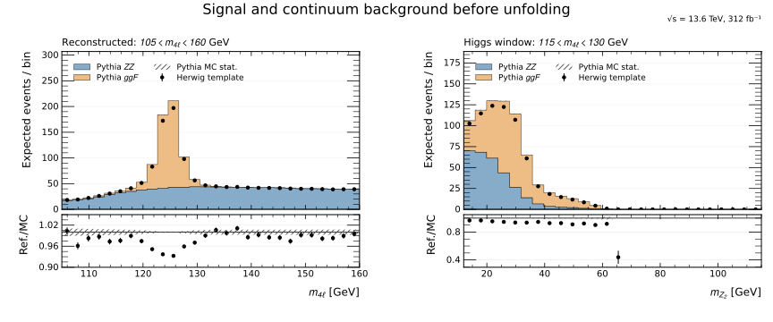
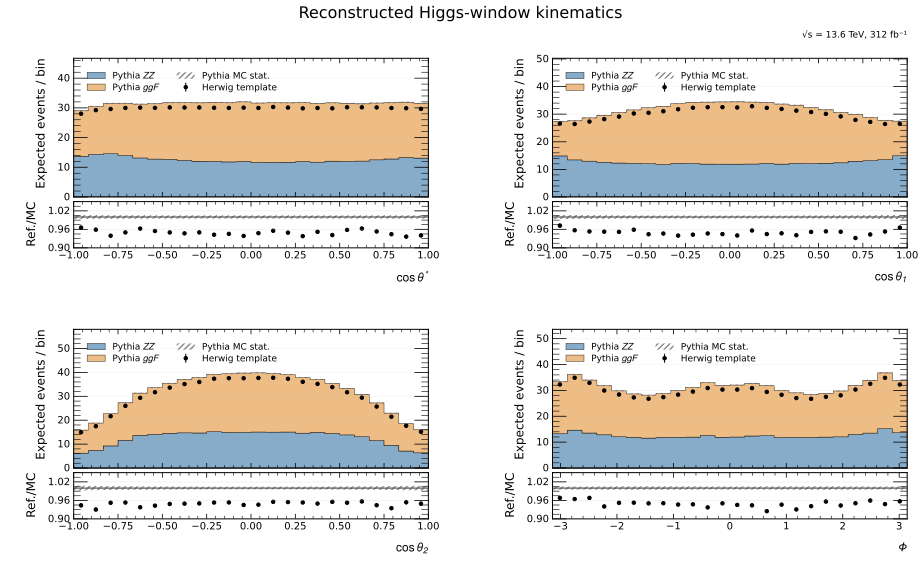
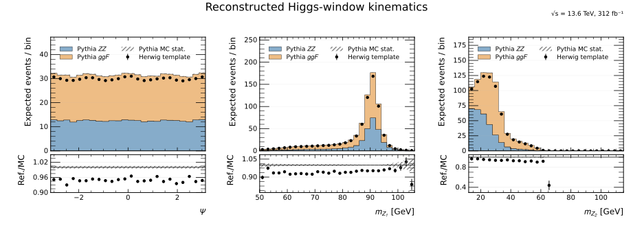
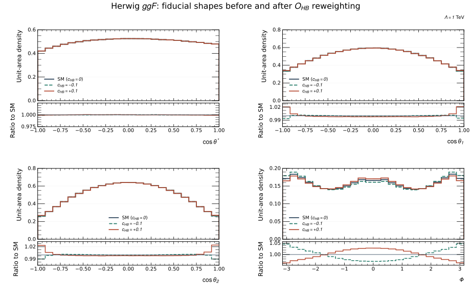
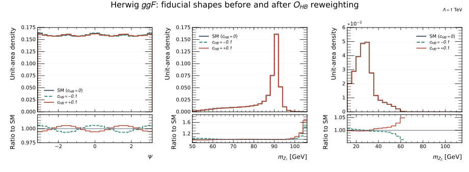
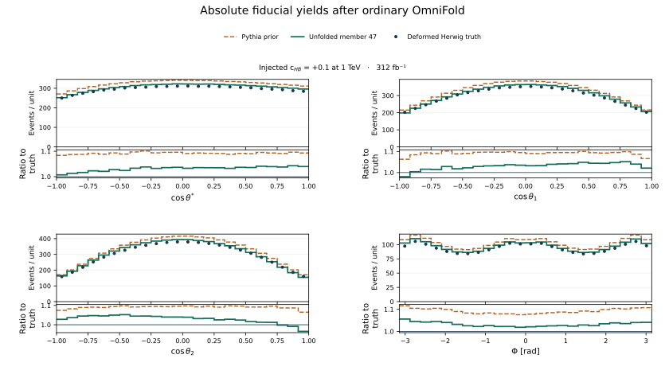

Current research state · 19 November 2026 · 21:08 UTC
Four-lepton unfolding
The Pythia prior predicts 647.55 fiducial events. Member 47 unfolds to 611.69, compared with 592.87 in the deformed Herwig reference. View the unfolding results.
Target: cHB = +0.1 at Λ = 1 TeV, with 0 and −0.1 controls.
Explore all distributions · Current status · Detailed history
Accepted full samples
Event totals
| Configuration | ggF entries | ggF reco | ZZ entries | ZZ reco |
|---|---|---|---|---|
| Pythia nominal | 35,000,000 | 5,607,187 | 67,990,000 | 504,772 |
| Pythia muon scale +1% | 35,000,000 | 5,642,232 | 67,990,000 | 504,985 |
| Pythia muon scale −1% | 35,000,000 | 5,569,862 | 67,990,000 | 505,436 |
| Herwig nominal | 35,000,000 | 5,150,310 | 68,000,000 | 500,780 |
Entries are showered and simulated Analysis rows. Reco counts use the selected 105 < m4ℓ < 160 GeV region; pilots are excluded. The Pythia scale variations share events and are correlated.
POWHEG+Pythia supplies simulation and muon-scale variations. POWHEG+Herwig supplies pseudo-data templates and the modeling variation.
All eight configurations are merged and validated. Expected-yield plots use the repository convention of 312 fb−1.
Before unfolding
Signal peak and continuum background

The seven unfolding observables · 1 / 2
Reconstructed angular distributions

The seven unfolding observables · 2 / 2
Ψ and the two dilepton masses

Before and after SMEFT reweighting · 1 / 2
OHB: fiducial angular shapes

Before and after SMEFT reweighting · 2 / 2
OHB: Ψ and dilepton-mass shapes

At cHB = +0.1, the fiducial signal yield changes from 595.70 to 593.32 expected events (-0.40%). In the reconstructed Higgs window: 417.62 → 415.96 (-0.40%).
Run 3 pseudo-data · cHB = +0.1 at 1 TeV
Nominal Higgs-region pseudo-data

Member 47 supplies both the sideband fit (637 observed events) and the fixed Higgs data (726 observed events). The histograms include signal and background before subtraction.
Sideband fit 47 · reconstructed Higgs window
Does the ZZ correction transfer?

At 312 fb⁻¹, Pythia ZZ predicts 301.36 Higgs-window events before correction and 296.86 with nominal fit 47. Herwig predicts 299.86.
Transfer and uncertainty bands · Nominal plots (14-page PDF) · Same nominal with 68% bands (PDF)
Sideband fit 47 · reconstructed Higgs window
Transport in Ψ and the dilepton masses

At 312 fb⁻¹, Pythia ZZ predicts 301.36 Higgs-window events before correction and 296.86 with nominal fit 47. Herwig predicts 299.86.
Transfer and uncertainty bands · Nominal plots (14-page PDF) · Same nominal with 68% bands (PDF)
Ordinary OmniFold · cHB = +0.1 at 1 TeV
Fiducial unfolding

The Pythia prior predicts 647.55 fiducial events. Member 47 unfolds to 611.69, compared with 592.87 in the deformed Herwig reference. The nominal shows a smaller unit-area shape discrepancy in 1 of seven projections. The yield-sensitive closure loss is 0.00166, compared with 0.00854 for the prior.
Current conclusions and next step
From pseudo-data to the first unfolding
What is established
The accepted sample counts, normalization and provenance have passed validation. The coefficient-zero SMEFT weights reproduce the original sample. The ±0.1 weights are finite and nonnegative.
Expected yields and kinematic distributions are now available for the full samples.
What comes next
Derive the development weights with member 47, refit the ordinary OmniFold hyperparameter scan, and propagate the two conditional statistical ensembles.
Fiducial closure comparisons are available. The unbinned cHB measurement follows validation of the unfolding.
The SMEFT target is a controlled LO decay deformation. Comparisons refer to selected reconstructed or fiducial phase space; an inclusive preselection normalization is not used. Unsupported tau signal remains unchanged and is 0.060% of the reconstructed Higgs-window signal.
Plot definitions and interpretation · Current numerical summary · Archived production and method notes